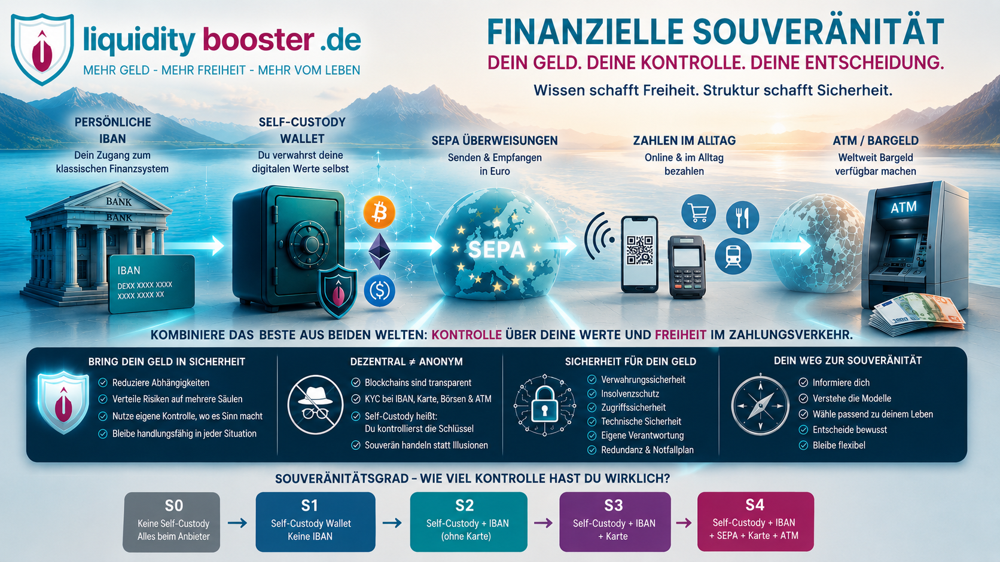

Finanzielle Souveränität im Alltag: IBAN, Self-Custody, Karte und Bargeldzugang
Persönliche IBAN, eigenes Wallet, SEPA, Visa oder Mastercard und Bargeld am Geldautomaten: Neue Finanzmodelle verbinden heute Dinge, die noch vor wenigen Jahren getrennte Welten waren. Doch was davon bedeutet wirklich mehr Kontrolle – und was klingt nur unabhängig?
Warum dieses Thema immer wichtiger wird
Viele Menschen suchen heute nach einer zweiten IBAN, einem zusätzlichen Zahlungsweg, einer Krypto-Karte oder einer Self-Custody-Lösung. Dahinter steckt häufig dieselbe Frage: Wie kann ich meine finanzielle Handlungsfähigkeit verbreitern, ohne mit allem an einem einzigen Konto, einer einzigen Bank oder einer einzigen App zu hängen?
Die Antwort ist komplizierter als ein Produktname. Eine App kann gleichzeitig mit „IBAN“, „Krypto“ und „Karte“ werben und technisch trotzdem völlig anders aufgebaut sein als eine andere. Entscheidend ist deshalb nicht nur, was angeboten wird, sondern wie Geld und digitale Vermögenswerte tatsächlich verwahrt und bewegt werden.
Eigene Kontrolle
Wer besitzt die Schlüssel? Wer kann eine Transaktion stoppen? Bleiben digitale Vermögenswerte erreichbar, wenn eine Karte oder ein Konto gesperrt wird?
Alltagstauglicher Zugriff
Kann ich Geld per IBAN empfangen, per SEPA überweisen, im Alltag bezahlen und bei Bedarf Bargeld am ATM bekommen?
Was bedeutet „Sicherheit für mein Geld“ eigentlich?
Der Satz „Bring dein Geld in Sicherheit“ klingt eindeutig. In Wirklichkeit gibt es aber keinen universellen Ort, an dem Geld automatisch sicher ist. Sicherheit besteht aus mehreren Ebenen – und jede Lösung reduziert bestimmte Risiken, während sie andere hinzufügt.
Drei Mythen im Faktencheck
Eine Bank bietet andere Schutzmechanismen als eine Hardware-Wallet. E-Geld wird anders geschützt als eine klassische Bankeinlage. Ein Stablecoin hat wiederum andere Risiken als Bargeld oder ein Euro-Guthaben. Wer Geld einfach von A nach B verschiebt, tauscht häufig ein Risikoprofil gegen ein anderes.
Nein. Self-Custody bedeutet zunächst nur, dass der Nutzer die Kontrolle über private Schlüssel oder ein Smart-Wallet besitzt. Öffentliche Blockchains sind häufig sehr transparent. Sobald IBAN, Börse, On-/Off-Ramp, Visa/Mastercard oder ATM ins Spiel kommen, gehören Identitätsprüfung sowie KYC-/AML-Prozesse zum regulierten Teil der Infrastruktur.
Self-Custody kann das Gegenparteirisiko eines Verwahrers reduzieren. Gleichzeitig wandert Verantwortung zum Nutzer. Verlorene Schlüssel, Phishing, falsche Netzwerke, Smart-Contract-Fehler oder eine falsche Empfängeradresse können irreversible Folgen haben.
Eine persönliche IBAN ist nicht automatisch ein Bankkonto
Gerade bei modernen Fintech- und Web3-Angeboten ist diese Unterscheidung entscheidend. Eine IBAN ist zunächst eine Kontokennung für Zahlungsverkehr. Dahinter kann eine Bank stehen – aber ebenso ein E-Geld-Institut oder ein Zahlungsdienstleister.
Bankeinlage
Liegt Geld als Einlage bei einer Bank, können je nach Institut und Rechtsraum gesetzliche Einlagensicherungssysteme greifen. In der EU liegt die harmonisierte Schutzgrenze bei klassischen gedeckten Einlagen grundsätzlich bei 100.000 Euro pro Einleger und Bank.
E-Geld / Payment Account
Bei einem E-Geld-Institut werden Kundengelder typischerweise nach den geltenden Safeguarding-Regeln geschützt bzw. getrennt gehalten. Das ist jedoch nicht dasselbe wie eine klassische Bankeinlage mit gesetzlicher Einlagensicherung.
Deshalb reicht die Frage „Bekomme ich eine IBAN?“ nicht. Die bessere Frage lautet: Wer führt sie, in wessen Namen läuft sie und welcher Schutz gilt für die Euro dahinter?
Wie ein modernes Self-Custody-/IBAN-Modell aussehen kann
Der interessante neue Ansatz ist ein Hybrid: Die digitale Vermögensbasis kann selbstverwahrt sein, während regulierte Partner nur die Brücke zu Euro, SEPA, Karte und Bargeld herstellen.
Das Souveränitätsraster S0 bis S4
Um Angebote nicht nach Werbesprache, sondern nach tatsächlicher Struktur zu vergleichen, verwenden wir fünf Stufen. Sie sagen nicht, ob ein Anbieter „gut“ oder „schlecht“ ist. Sie zeigen nur, wie weit die eigene Kontrolle reicht.
Fiat und/oder Krypto liegen beim Anbieter, einer Bank oder einer Custody-Struktur.
Digitale Vermögenswerte werden selbst kontrolliert, aber ohne vollwertige Fiat-Brücke.
Eine persönliche oder dedizierte IBAN verbindet Banktransfer und eigene Wallet, aber eine vollständige Alltagskarte fehlt.
Wallet und Zahlungsweg sind verbunden; physische Karte oder ATM können aber fehlen oder eingeschränkt sein.
Die stärkste derzeit gefundene Kombination aus eigener Kontrolle und reguliertem Alltagszugang.
Anbieter im Faktencheck
Die Ampel bewertet die Nachvollziehbarkeit der Struktur und der veröffentlichten Angaben – nicht die Rendite, nicht die Qualität als Anlage und nicht die persönliche Eignung. Grün bedeutet daher nicht „Empfehlung“. Ein reguliertes custodial Angebot kann transparent grün sein und trotzdem bei S0 liegen.
| Anbieter | Self-Custody | pers. IBAN | SEPA | physisch | ATM | Grad | Ampel |
|---|---|---|---|---|---|---|---|
| Gnosis App / Gnosis Pay + Monerium | Ja | Ja | Ja | Ja | Ja | S4 | |
| Zeal + Gnosis Pay | Ja | Ja | Ja | Ja | über Kartenrail | S4 | |
| Deblock | Crypto: ja | Ja | Ja | Ja | Ja | S4-Hybrid | |
| Holyheld | Ja | Ja | Ja | Ja | Ja laut Anbieter | S4 | |
| Mine | Ja | EUR/CHF | Ja | Ja | Ja | S4 | |
| wave.space | BTC/NWC | vIBAN | Ja | Ja | Ja | S4-Hybrid | |
| Nuri | beworben | beworben | beworben | beworben | beworben | S4-Zielbild | |
| Bringin | BTC | dediziert / vIBAN | Ja | prüfen | prüfen | S2–S3 | |
| SafePal + Fiat24 | Ja | CH | Ja | derzeit nein | derzeit nein | S3 | |
| THORWallet Swiss IBAN / Fiat24 | Ja | CH | Ja | IBAN-Tier virtuell | IBAN-Tier nein | S3 | |
| Mt Pelerin Bridge Wallet | Ja | Crypto-IBAN | Ja | nicht belegt | nicht belegt | S2 | |
| OpenWallet | Ja | Ja | vor allem Eingang | Nein | Nein | S2 |
Die Tabelle ist eine Momentaufnahme. Länderlisten, Partner, Kartentypen, Gebühren und Funktionen können sich kurzfristig ändern. Deshalb sind die Originalquellen unten ausdrücklich anklickbar.
Die wichtigsten Modelle genauer betrachtet
Gnosis App / Gnosis Pay + Monerium
Der derzeit klarste Referenzfall für S4.
Gnosis App / Gnosis Pay + Monerium
Der derzeit klarste Referenzfall für S4.
Gnosis verbindet eine Self-Custody-Smart-Wallet mit einer persönlichen IBAN über Monerium und dem regulierten Kartenprogramm von Gnosis Pay. Euro-Eingänge können als reguliertes Euro-E-Geld-Token in der eigenen Wallet ankommen. Die Karte selbst bleibt ein reguliertes Visa-Produkt – die Self-Custody betrifft die Wallet, nicht das Kartennetz.
Zeal + Gnosis Pay
Self-Custody-Wallet mit angebautem reguliertem Zahlungsrail.
Zeal + Gnosis Pay
Self-Custody-Wallet mit angebautem reguliertem Zahlungsrail.
Zeal ist eine Self-Custody-Wallet und nutzt für Bankeinzahlungen sowie Kartenfunktionen Partnerinfrastruktur. Dadurch entsteht ein ähnliches Grundmodell wie bei Gnosis: Nutzerkontrolle auf der Wallet-Seite, regulierte Finanzpartner für Fiat- und Kartenfunktionen.
Deblock
Klassisches Euro-Konto und non-custodial Crypto-Wallet in einer App.
Deblock
Klassisches Euro-Konto und non-custodial Crypto-Wallet in einer App.
Deblock ist besonders interessant, weil Fiat- und Krypto-Seite bewusst getrennt sind. Die Euro-Seite funktioniert als regulierter E-Geld-/Kontobereich, während die Krypto-Wallet non-custodial aufgebaut ist. Kartenzahlungen laufen daher nicht einfach „direkt aus einer dezentralen Wallet“, sondern über die regulierte Zahlungsseite.
Holyheld
Self-Custody mit persönlicher IBAN, Karte und ATM-Funktion.
Holyheld
Self-Custody mit persönlicher IBAN, Karte und ATM-Funktion.
Holyheld beschreibt ein Modell aus Self-Custody-Wallet, persönlicher IBAN, SEPA, physischer bzw. virtueller Karte und Bargeldabhebung. Für die endgültige grüne Einstufung ist für uns vor allem die vollständige und dauerhaft nachvollziehbare Partner-/Issuer-Kette entscheidend.
Mine
IBAN-Eingänge werden mit einer Self-Custody-Struktur verknüpft.
Mine
IBAN-Eingänge werden mit einer Self-Custody-Struktur verknüpft.
Mine ist technisch sehr interessant, weil persönliche EUR-/CHF-Zahlungswege, Self-Custody und Karten-/ATM-Funktionen miteinander verbunden werden. Noch genauer zu beobachten bleibt die regulatorische Zuordnung der jeweils eingesetzten Karten- und Zahlungsdienstleister.
wave.space
Bitcoin/NWC trifft auf persönliche vIBAN und Visa-Zahlungsrail.
wave.space
Bitcoin/NWC trifft auf persönliche vIBAN und Visa-Zahlungsrail.
wave.space verbindet Bitcoin-orientierte Wallet-Funktionen mit einem regulierten Euro-/vIBAN- und Kartenbereich. Besonders spannend ist die Nostr-Wallet-Connect-Anbindung eigener Lightning-Wallets. Gleichzeitig zeigen die Bedingungen, dass der Karten- und Kontenbereich über regulierte Partner bereitgestellt wird.
Nuri
Spannendes S4-Versprechen – Dokumentation weiter beobachten.
Nuri
Spannendes S4-Versprechen – Dokumentation weiter beobachten.
Die aktuelle Nuri-Version wirbt mit Self-Custody, persönlicher IBAN, Karte und Bargeldzugang. Für uns bleiben aber einzelne Angaben zur Karten-/Issuer-Struktur und zum konkreten Produktweg erklärungsbedürftig. Deshalb aktuell keine grüne Einstufung.
Fiat24 mit SafePal / THORWallet
Schweizer IBAN direkt in Self-Custody-Wallets – ATM aber nicht automatisch dabei.
Fiat24 mit SafePal / THORWallet
Schweizer IBAN direkt in Self-Custody-Wallets – ATM aber nicht automatisch dabei.
Fiat24 ist weniger ein einzelnes Wallet als eine Web3-Banking-Infrastruktur, die in verschiedene Wallets integriert wird. Persönliche Schweizer IBAN und SEPA sind möglich. Wichtig ist jedoch: Das IBAN-/Kartenprodukt darf nicht automatisch mit anderen Kartentiers desselben Wallets vermischt werden. Eine virtuelle Karte ohne PIN ist kein normaler ATM-Zugang.
Mt Pelerin Bridge Wallet
Sehr klare Self-Custody-/IBAN-Brücke, aber keine vollständige S4-Alltagslösung.
Mt Pelerin Bridge Wallet
Sehr klare Self-Custody-/IBAN-Brücke, aber keine vollständige S4-Alltagslösung.
Mt Pelerin zeigt sehr gut, dass eine persönliche IBAN als Brücke zur eigenen Wallet dienen kann. Euro-Zahlungen können in Krypto bzw. Stablecoins umgewandelt und an die eigene Wallet weitergeleitet werden. Eine integrierte physische Karte mit ATM ist dagegen nicht der Kern dieses Modells.
OpenWallet
Persönliche IBAN als On-Ramp – kein vollständiges Girokonto.
OpenWallet
Persönliche IBAN als On-Ramp – kein vollständiges Girokonto.
OpenWallet ist ein gutes Beispiel dafür, warum „IBAN vorhanden“ nicht gleich „vollwertiges Bankkonto“ bedeutet. Die persönliche IBAN dient vor allem als Brücke zur Wallet. Ein kompletter Zahlungsalltag mit physischer Karte und ATM ist damit nicht automatisch abgedeckt.
Bringin
Bitcoin aus eigener Wallet in den Euro-Zahlungsverkehr bringen.
Bringin
Bitcoin aus eigener Wallet in den Euro-Zahlungsverkehr bringen.
Bringin richtet sich stark an Bitcoin- und Lightning-Nutzer. Self-Custody auf der Bitcoin-Seite und eine regulierte Euro-/IBAN-Brücke können kombiniert werden. Ob physische Karte und ATM für deutsche Nutzer jeweils aktuell in derselben Produktkonfiguration verfügbar sind, sollte vor Nutzung erneut geprüft werden.
Weitere relevante Karten- und Walletmodelle
Nicht jedes interessante Krypto-Kartenangebot besitzt gleichzeitig eine persönliche IBAN. Für die Einordnung sind diese Modelle trotzdem wichtig, weil sie zeigen, wie unterschiedlich „Krypto-Karte“ technisch gemeint sein kann.
Self-Custody bis zur Zahlung möglich; Deutschland unterstützt. ATM ist je nach Kartenprogramm/Region nicht automatisch verfügbar.
Offizielle SeiteNon-custodial bzw. smart-account-basiertes Kartenmodell mit Kredit-/Collateral-Logik. Dadurch andere Risiken als bei einem simplen Prepaid-Modell.
Offizielle SeiteSelf-Custody-orientiertes Zahlungsmodell; EU-/Deutschland-Verfügbarkeit und ATM-Funktion müssen beim jeweils aktuellen Rollout geprüft werden.
Offizielle SeiteKann Zahlungen aus verbundenen Self-Custody-Wallets ermöglichen; Bargeldabhebung kann dagegen über einen zentralen Oobit-Balanceweg laufen.
Offizielle SeiteUnd was ist mit klassischen Krypto-/Finanzanbietern?
Anbieter wie Sygnum, AMINA, Brighty, Wise, Revolut oder klassische Kryptokarten können regulatorisch transparent und im Alltag sehr nützlich sein. Sie gehören aber nicht automatisch in die Self-Custody-Kategorie. Genau deshalb trennen wir Transparenz/Ampel von Souveränitätsgrad S0–S4.
SygnumAMINABrighty TermsWise · KundengelderWas es trotz aller Fortschritte nicht gibt
Keine vollständig dezentrale Visa oder Mastercard
Kartennetz, Kartenemittent, Händlerakzeptanz, Betrugsprüfung und Abrechnung bleiben regulierte Infrastrukturen.
Kein wirklich dezentrales ATM-Netz
Ein Geldautomat zahlt nur aus, wenn ein zentraler Karten- und Zahlungsweg die Transaktion autorisiert und abrechnet.
Keine Garantie durch das Wort „Self-Custody“
Auch eine eigene Wallet kann durch Bedienfehler, Phishing, kompromittierte Geräte oder technische Risiken Geld verlieren.
Keine Anonymität nur durch eine Wallet
IBAN, On-/Off-Ramp, Börse, Karte und ATM sind regelmäßig mit Identitätsprüfung und regulatorischen Pflichten verbunden.
Sieben Fragen, bevor du einem Anbieter Geld anvertraust
Mehr Sicherheit durch Redundanz statt durch den nächsten Allein-Anbieter
Wer finanzielle Souveränität sucht, sollte das alte Abhängigkeitsmodell nicht einfach durch ein neues ersetzen. Eine einzige App, in der Wallet, IBAN, Karte und sämtliche Vermögenswerte zusammenlaufen, kann bequem sein – ist aber wieder ein einzelner Zugangspunkt.
klassisches Bankkonto + zweiter Zahlungsweg + separat gesicherte Self-Custody-Wallet + unabhängige Backup-Möglichkeit + ausreichend Bargeld für den persönlichen Notfallbedarf.
Welche Aufteilung sinnvoll ist, hängt von persönlicher Situation, Kenntnissen, Beträgen und Risikotoleranz ab. Der Artikel beschreibt Strukturen und Unterschiede und ist keine individuelle Anlage-, Rechts- oder Steuerberatung.
Warum wir die Originalquellen verlinken
Finanzprodukte verändern sich schnell. Kartenemittenten wechseln, Länderlisten werden angepasst, Funktionen kommen hinzu oder verschwinden. Deshalb führen die Links in diesem Artikel möglichst direkt zu Anbieterinformationen, Bedingungen oder technischen Dokumentationen. Leser können so selbst prüfen, ob eine Aussage zum Zeitpunkt ihrer eigenen Entscheidung noch gilt.
E-Geld und Zahlungsdienste
Die europäische E-Geld-Regulierung hilft bei der Einordnung, warum ein Payment Account mit IBAN nicht automatisch dasselbe ist wie eine Bankeinlage.
EUR-Lex · E-Geld-RichtlinieBanken und Drittstaaten
CRD VI ist für klassische Bankdienstleistungen aus Drittstaaten relevant. Sie ist jedoch kein generelles Verbot von Self-Custody, internationalen Karten oder ausländischen Konten für EU-Bürger.
EUR-Lex · CRD VIFinanzielle Souveränität ist kein Produkt, das man kaufen kann.
Sie entsteht, wenn Menschen ihre Abhängigkeiten kennen, Risiken unterscheiden, mehrere Zugangswege aufbauen und bewusst entscheiden können, welche Teile ihres finanziellen Lebens sie selbst kontrollieren und welche sie einem regulierten Anbieter anvertrauen.
Mehr Kontrolle ist dabei nicht automatisch sicherer. Mehr Regulierung ist nicht automatisch unsicherer. Entscheidend ist, dass man versteht, wer was kontrolliert – und was passiert, wenn ein Teil der Struktur ausfällt.